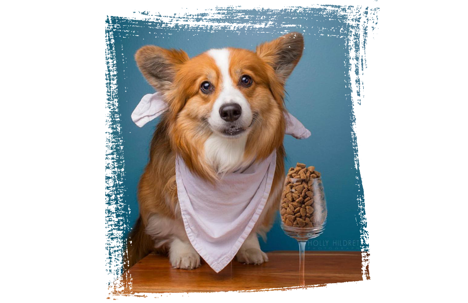

İşte köpekler! Ne kadar da tatlılar değil mi? Yer yüzünde 328 köpek ırkı bulunduğunu artık resmen kabul edilmiş bir gerçektir. Bizim ülkemiz, Türkiye'ye özgü bazı köpek türleri; Akbaş çoban köpeği, Aksaray malaklısı, Dikkulak köpeği, İnci köpeği zağar, Kangal, Karaman köpeği, Kars(Kafkas) köpeği, Koyun köpeği ve daha bir çok köpek türüdür.
Köpek Neyle Beslenir
Köpek besleyen kişilerin dikkat etmeleri gereken ilk konu köpek neyle beslenir sorusudur. Küçük bir bebek gibi olan köpekler, en az onlar kadar bakım ve ilgi isterler. Beslenmeleri de sağlıklı yaşam sürdürebilmeleri için çok önemlidir. Her köpeğin yaşına, cinsine, türüne göre farklı beslenme şekilleri vardır. Bu nedenle, alınan köpeğin türüne göre alırken köpek neyle beslenir bilgi almak gerekir. Köpekler genel anlamda etçil olan canlılardır. Köpeklerin temel anlamda gıda maddesi yağlar, hayvansal proteinler ve karbonhidratlardır. Bebeklik döneminden başlanması gereken sağlıklı beslenme, yetişkin çağında da devam eder ve köpeğin yaşamının daha uzun olabilmesi için sürekli olarak sağlıklı beslenmelerine önem verilmelidir. Köpeklerin bakımları ve beslenmeleri çok önemlidir. Bu nedenle bilgi sahibi olmadan köpek beslemeye başlamak yanlıştır. Köpek besleme düşüncesi taşıyan kişiler, seçtikleri köpeğin türüne göre gerekli olan bilgileri bir veterinerden mutlaka öğrenmelidir. Böylece köpeğin sağlıklı bir şekilde uzun süre yaşaması sağlanır. Aşağıda köpek beslenmesinde dikkat edilmesi gereken noktalar anlatılmıştır. Köpek beslemek isteyenlerin bu ayrıntılara dikkat etmesi önemlidir. 
Köpek Beslerken Nelere Dikkat Edilmelidir?
- Köpekler günlük olarak bir veya 2 öğün beslenmelidir.
- Köpekler için daima temiz su bulundurulmalıdır.
- Köpeklere aktivitelerinden önce ya da sonra hemen yemek verilmemelidir.
- Bakılan köpek özel faaliyetlerde kullanılan bir köpek ise özel diyetler ile beslenmelidir.
- Beslenme sırasında fosfor oranı ile kalsiyum oranına çok dikkat edilmelidir.
- Köpeklerin türüne özgü olan ağırlıklarının korunması gerekir.
- Kolay bir şekilde sindirilebilecek gıdalar verilmelidir.
- Gıdada selüloz miktarının yeterli oranda olmasına dikkat edilmelidir.
- Yeterli miktarda mineral ve vitaminler verilmesine dikkat edilmelidir.
- Köpekler laktozu sindiremezler. Bu nedenle besinlerde verilen laktoz oranına dikkat edilmelidir.
- Gıda değişimi yapılacağında, bunun ani olarak değil de yavaş yavaş köpeği alıştırarak yapılması gerekir.